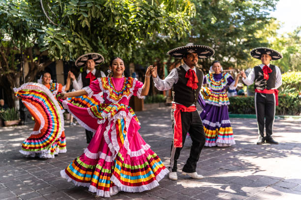

Cultura

A cultura mexicana une tradições indígenas e influências espanholas, sendo marcada por cores vivas, fé católica e festas como o Dia dos Mortos. A culinária é famosa por pratos como tacos e guacamole, e a música, com o mariachi, reflete a alegria do povo. A arte de Frida Kahlo e o artesanato colorido mostram a riqueza cultural do México.
Vestimentas
As vestimentas mexicanas são coloridas e cheias de significado. As mulheres costumam usar vestidos bordados e saias rodadas, como o huipil e o traje de china poblana, enquanto os homens usam chapéus largos (sombreros) e roupas típicas como o traje de charro, usado pelos mariachis. Esses trajes representam o orgulho e as tradições do país, sendo muito usados em festas e danças folclóricas.
Religião
A principal religião do México é o catolicismo, trazido pelos espanhóis durante a colonização. A fé é muito presente no dia a dia e nas festas populares, como o Dia de los Muertos e as festas da Virgem de Guadalupe, padroeira do país. Além do catolicismo, algumas comunidades ainda mantêm crenças indígenas, misturando tradições antigas com a religião cristã.

Música e dança
A música e a dança são partes importantes da cultura mexicana. O país é conhecido por ritmos como o mariachi, a ranchera e a cumbia mexicana, que expressam alegria e amor pela terra. As danças folclóricas, com trajes coloridos e movimentos animados, são muito presentes em festas e celebrações, mostrando o orgulho e a tradição do povo mexicano, e a principal dança é a Jarabe Tapatío.

Festas e costumes
As festas e costumes do México são cheios de cor, música e tradição. A mais famosa é o Dia dos Mortos, que celebra a memória dos entes queridos com flores, velas e comidas típicas. Outras comemorações importantes são o Dia da Independência e as posadas, festas natalinas com músicas e encenações. Essas celebrações mostram a alegria e o forte senso de comunidade do povo mexicano.

Voltar para o início